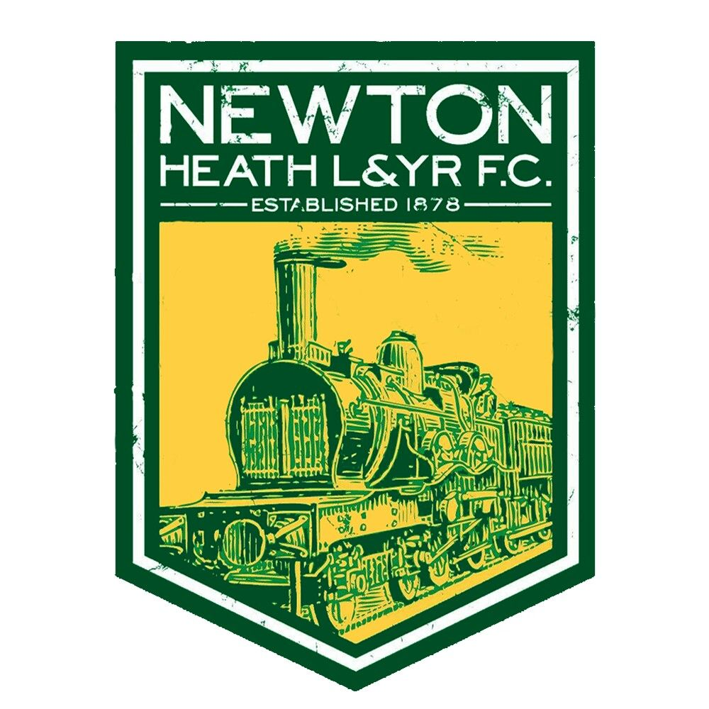
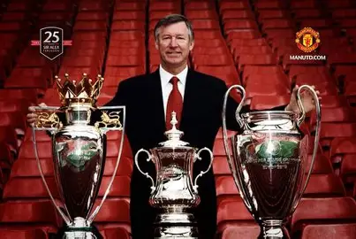
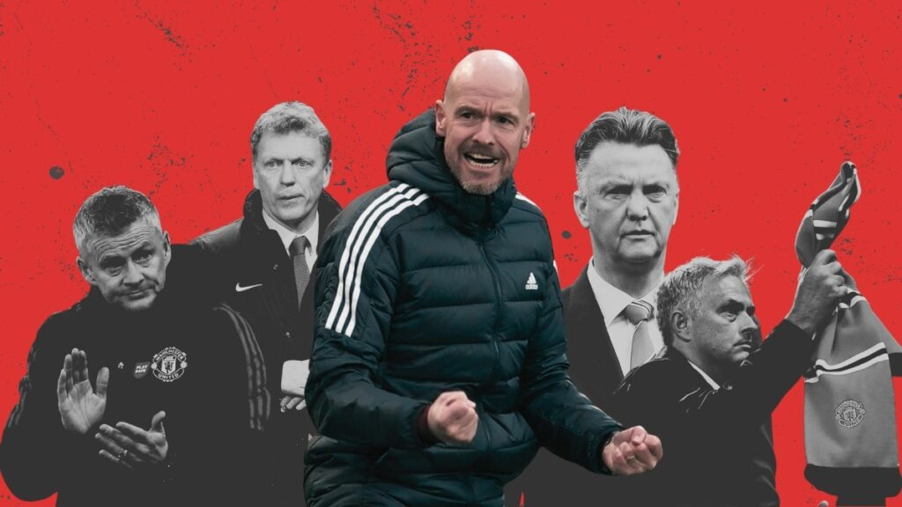

1878 – 1900
Newton Heath LYR FC
Manchester United's story begins not in the Theatre of Dreams, but in the coal and cotton yards of
Newton Heath, Manchester. In 1878, workers of the Lancashire and Yorkshire Railway formed Newton Heath
LYR Football Club. The club struggled financially through its early years, playing on muddy pitches far
removed from the grand stadiums of today. A series of fundraising events — including a bazaar that
famously found the club a new benefactor — kept the side alive.

1902 – 1939
Becoming Manchester United
In 1902, with the club near bankruptcy, local businessman John Henry Davies stepped in as club president
and renamed the side Manchester United. The early decades saw the club win its first league title in 1908
and its first FA Cup in 1909. Old Trafford opened its doors in 1910. Two World Wars interrupted the
club's development, but the foundations for something historic had been laid.
1945 – 1958
The Busby Babes
Matt Busby arrived as manager in 1945 and transformed United into the most exciting team in England.
He built a youth-centred philosophy that produced a generation of brilliant young players known as the
Busby Babes — including Duncan Edwards, Roger Byrne, and Tommy Taylor. United won the First Division
title in 1952, 1956, and 1957, and reached the European Cup semi-finals. Then, on February 6, 1958,
tragedy struck at Munich Airport. A plane crash killed eight of United's first-team players — a loss
that shook English football to its core.
1958 – 1969
Rebuilding and the 1968 European Cup
Matt Busby rebuilt United with remarkable courage. He signed Denis Law and Bobby Charlton emerged as a
generational talent. George Best arrived from Belfast and the Holy Trinity was complete. In 1968, ten
years after Munich, Manchester United became the first English club to win the European Cup, defeating
Benfica 4–1 at Wembley. Busby received a knighthood. It was the pinnacle of a long, painful, beautiful
journey.
1986 – 2013
The Ferguson Dynasty
Sir Alex Ferguson arrived in November 1986 and in 26 years transformed Manchester United into the
dominant force in English and European football. He won 13 Premier League titles, 5 FA Cups, and
2 Champions League trophies. The 1999 Treble — winning the Premier League, FA Cup, and Champions
League in the same season — remains one of the greatest achievements in football history. Ferguson
retired in May 2013 as the most successful manager in British football history.

2013 – Present
The Post-Ferguson Era
The years following Ferguson's retirement proved challenging. David Moyes, Louis van Gaal, José
Mourinho, Ole Gunnar Solskjær, and Erik ten Hag each attempted to restore United's dominance.
High-profile signings — including the return of Cristiano Ronaldo in 2021 — generated excitement but
consistent success has remained elusive. In 2023, INEOS and Sir Jim Ratcliffe acquired a controlling
stake in the club, signalling a new chapter and renewed ambition for one of football's greatest institutions.
